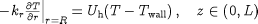

In contrast to initial conditions, which may differ from one simulation experiment to the next, boundary conditions are part of the description of the physical system behaviour itself. In gPROMS, they are therefore specified within Models. Boundary conditions can be viewed simply as additional equations relating the Model Variables; consequently, they may be included in the Equation section, together with all other model equations. However, for the sake of clarity, the user is encouraged to include the boundary conditions in a separate section, under the keyword Boundary. For instance, the boundary condition for heat transfer at the tubular reactor wall,

can be written as follows:
BOUNDARY ... # Heat transfer relation at tube wall FOR z := 0|+ TO ReactorLength|- DO - Kr * PARTIAL(T(z,ReactorRadius),Radial) = Uh * ( T(z,ReactorRadius) - Twall(z) ) ; END ... EQUATION
In any case, gPROMS currently treats the BOUNDARY and EQUATION sections in exactly the
same way for the purposes of numerical solution.